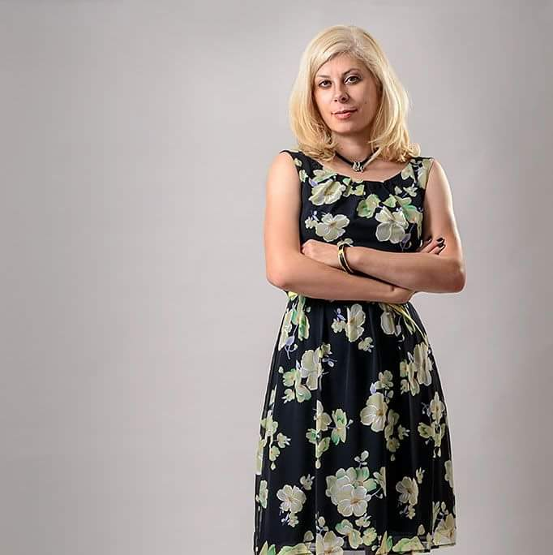

Юлия Чепик
психолог, специалист в области психологии в паллиативной медицине, супервизор, директор центра психологического образования и развития «Верум», автор пособий «Психология больного ребенка», «Особенности работы с лицами, перенесшими стрессовые ситуации» и др. Ведущая колонки психолога и автор публикаций в еженедельнике «Аргументы и Факты» в Белоруссии.

Инна Малаш
психолог, руководитель программы психологической помощи «Центр поддержки онкопациентов «Во имя жизни».